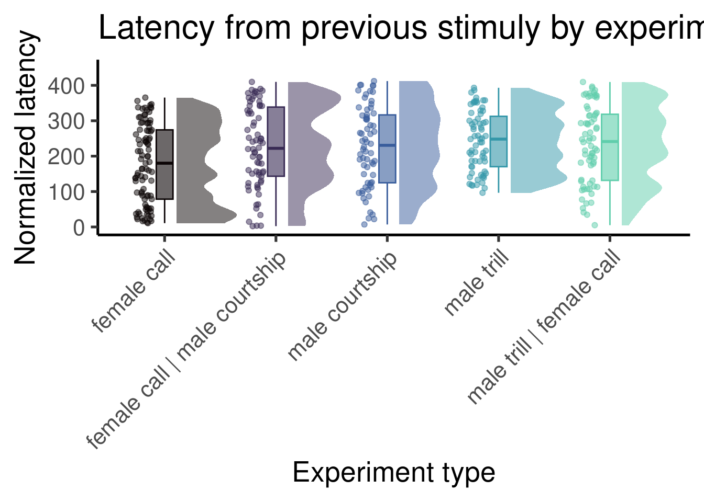

metadata <-read.csv("./data/raw/female_playbacks_datasheet.csv")metadata$file_name <-tolower(metadata$file_name)resp_time_df$experiment <-sapply(tolower(resp_time_df$sound.files), function(x) { metadata$stimuli[metadata$file_name == x]})resp_time_df$experiment <-gsub("+", "|", resp_time_df$experiment, fixed =TRUE)resp_time_df$location <-sapply(tolower(resp_time_df$sound.files), function(x) { metadata$location[metadata$file_name == x]})# aggregate(stimuli.latency ~ experiment, data = resp_time_df, FUN = mean)# aggregate(first.stimuli.latency ~ experiment, data = resp_time_df, FUN = mean)resp_time_df$norm.latency <-ifelse(resp_time_df$experiment =="female call", resp_time_df$stimuli.latency *25, resp_time_df$stimuli.latency *7)aggregate(norm.latency ~ experiment, data = resp_time_df, FUN = mean)
experiment
norm.latency
female call
178.726
female call | male courtship
225.435
male courtship
226.993
male trill
252.100
male trill | female call
233.945
Code
ggplot(resp_time_df,aes(x = experiment,y = norm.latency,color = experiment,fill = experiment)) +# add half-violin from {ggdist} packageggdist::stat_halfeye(# fill = fill_color,alpha =0.5,# custom bandwidthadjust = .5,# adjust heightwidth = .6,.width =0,# move geom to the crightjustification =-.2,point_colour =NA) +geom_boxplot(# fill = fill_color,width = .15,# remove outliersoutlier.shape =NA) +# add justified jitter from the {gghalves} packagegghalves::geom_half_point(# color = fill_color,# draw jitter on the leftside ="l",# control range of jitterrange_scale = .4,# add some transparencyalpha = .5,transformation = ggplot2::position_jitter(height =0)) +scale_color_viridis_d(option ="G", end =0.8) +scale_fill_viridis_d(option ="G",end =0.8,alpha =0.6) +theme_classic(base_size =20) +ylim(c(0, 450)) +theme(legend.position ="none", axis.text.x =element_text(angle =45, hjust =1)) +labs(title ="Latency from previous stimuly by experiment", y ="Normalized latency", x ="Experiment type")

Code
ggplot(resp_time_df,aes(x = experiment,y = first.stimuli.latency,color = experiment,fill = experiment)) +# add half-violin from {ggdist} packageggdist::stat_halfeye(# fill = fill_color,alpha =0.5,# custom bandwidthadjust = .5,# adjust heightwidth = .6,.width =0,# move geom to the crightjustification =-.2,point_colour =NA) +geom_boxplot(# fill = fill_color,width = .15,# remove outliersoutlier.shape =NA) +# add justified jitter from the {gghalves} packagegghalves::geom_half_point(# color = fill_color,# draw jitter on the leftside ="l",# control range of jitterrange_scale = .4,# add some transparencyalpha = .5,transformation = ggplot2::position_jitter(height =0)) +scale_color_viridis_d(option ="G", end =0.8) +scale_fill_viridis_d(option ="G",end =0.8,alpha =0.6) +theme_classic(base_size =20) +theme(legend.position ="none", axis.text.x =element_text(angle =45, hjust =1)) +labs(title ="Latency from first stimuly by experiment", y ="Latency from first stimuli", x ="Experiment type")
# Generate EMMs for the 'experiment' variableemms_experiment <-emmeans(mod, ~experiment)# Get pairwise contrasts between levels of 'experiment'contrast_experiment <-contrast(emms_experiment, method ="pairwise")# Display the contrastssummary(contrast_experiment)
contrast
estimate
lower.HPD
upper.HPD
female call - female call | male courtship
-0.263445
-0.560235
0.047759
female call - male courtship
-0.316067
-0.616653
0.004207
female call - male trill
-0.556810
-0.871426
-0.237253
female call - male trill | female call
-0.389306
-0.694099
-0.075191
female call | male courtship - male courtship
-0.054043
-0.379140
0.263362
female call | male courtship - male trill
-0.293303
-0.634426
0.022248
female call | male courtship - male trill | female call
# Generate EMMs for the 'experiment' variableemms_experiment <-emmeans(mod, ~experiment)# Get pairwise contrasts between levels of 'experiment'contrast_experiment <-contrast(emms_experiment, method ="pairwise")# Display the contrastssummary(contrast_experiment)
contrast
estimate
lower.HPD
upper.HPD
female call - female call | male courtship
-0.369223
-0.692540
-0.034258
female call - male courtship
-0.362836
-0.701770
-0.029486
female call - male trill
-0.601141
-0.944519
-0.278500
female call - male trill | female call
-0.454553
-0.774087
-0.124403
female call | male courtship - male courtship
0.004701
-0.341377
0.344649
female call | male courtship - male trill
-0.231586
-0.576908
0.112279
female call | male courtship - male trill | female call